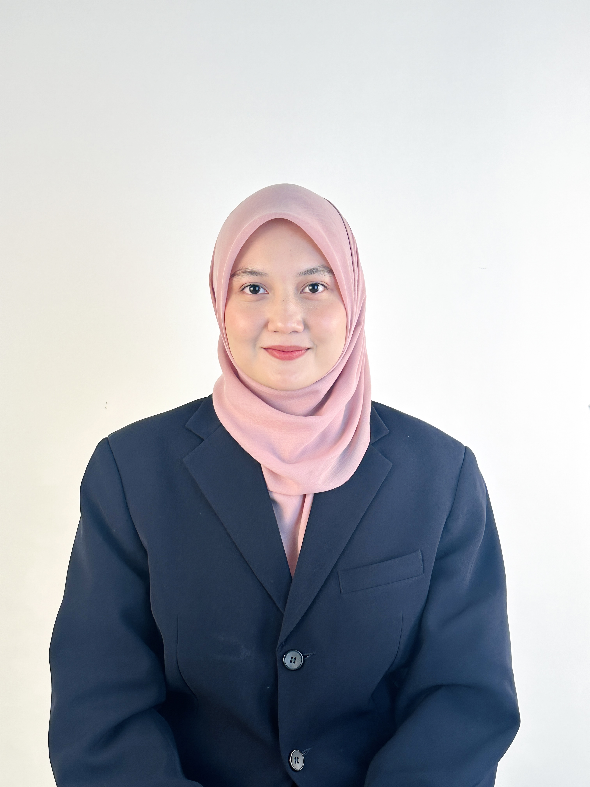

Hi! My name is Nur Ain Fathiyyah Binti Mohd Suhaimi, a final-year Bachelor of Information Technology (Media Informatics) student at Universiti Sultan Zainal Abidin (UNISZA).
Based in Seberang Takir, Kuala Terengganu, I am passionate about multimedia technology, virtual reality, web development, graphic design, photography, videography, and digital content creation.
This portfolio showcases my academic projects, achievements, technical skills, and creative works developed throughout my studies and learning journey.
Academic Background
Bachelor of Information Technology (Media Informatics) with Honours
2023 - Present
Dean's List Award : Semester 1 - Semester 5
Final Year Project: Interactive Learning of Human Anatomy via Virtual Reality
Diploma in Information Technology (Digital)
2019 - 2022
Dean’s List Award : Semester 2 - 6
GPA: 3.76
Final Year Project: Website Development forTahfiz An-Nur (Islamic School)
Personal Strengths
Technology & Software
Professional Experience
Cetak Pro Sdn. Bhd.
March 2022 - July 2022